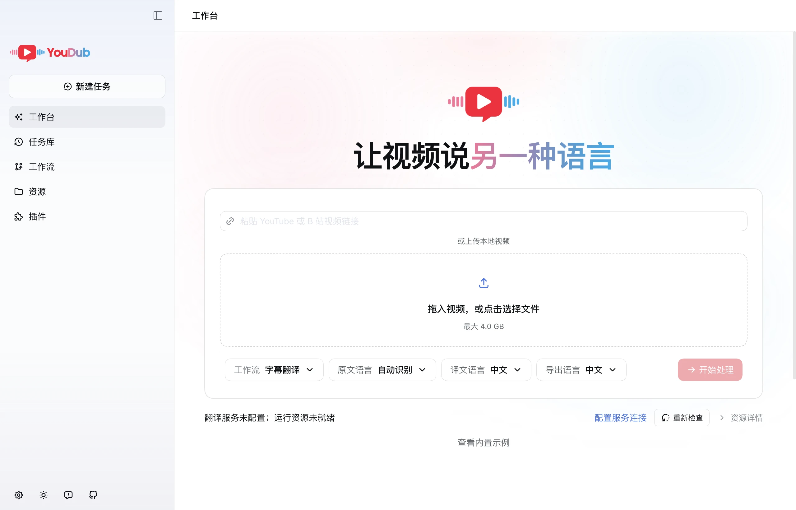

识别、翻译、逐句克隆原声。通过工作流校对字幕与配音，预览并导出成片。
macOS · Windows 安装指南 ↗
识别原文、翻译并生成目标语言字幕。
每句译文，使用对应原声片段作为配音参考。
原声加字幕、配音，或字幕与配音一起输出。

粘贴视频链接或上传本地文件
按需生成字幕、配音或配音视频
检查节点结果，订正后确认继续
试听配音，下载成片和字幕
正在加载下载版本…
首次启动按所选流程准备环境与模型，并配置服务连接。从旧版升级时，请重新确认数据目录与模型配置。
视频语言切换需要 JavaScript。你仍可通过 GitHub Releases 下载 YouDub。